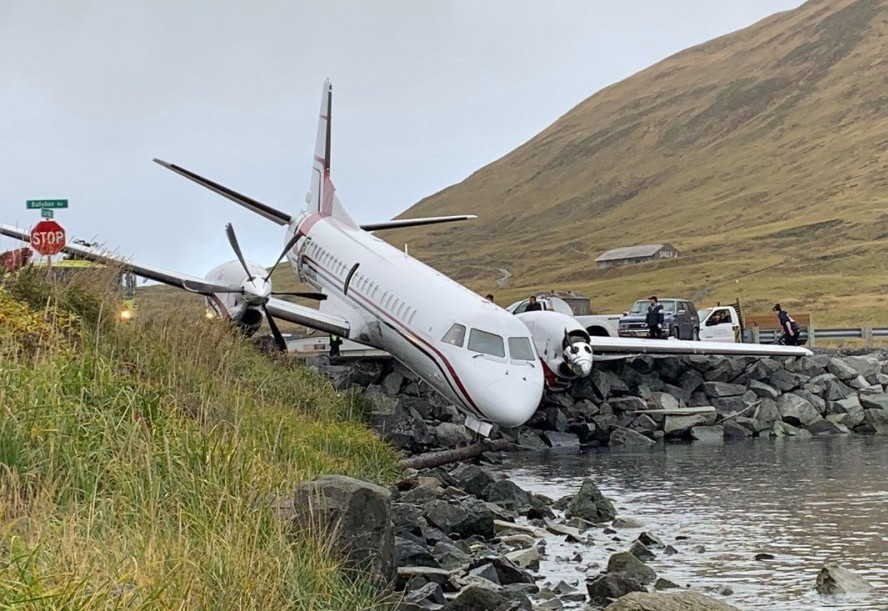
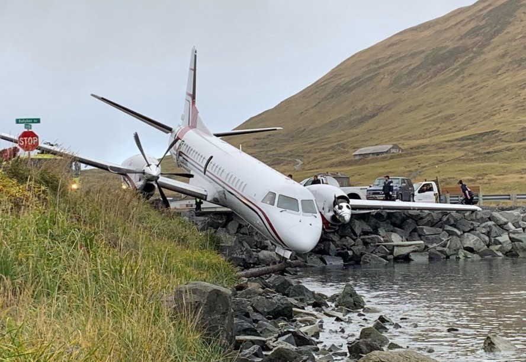
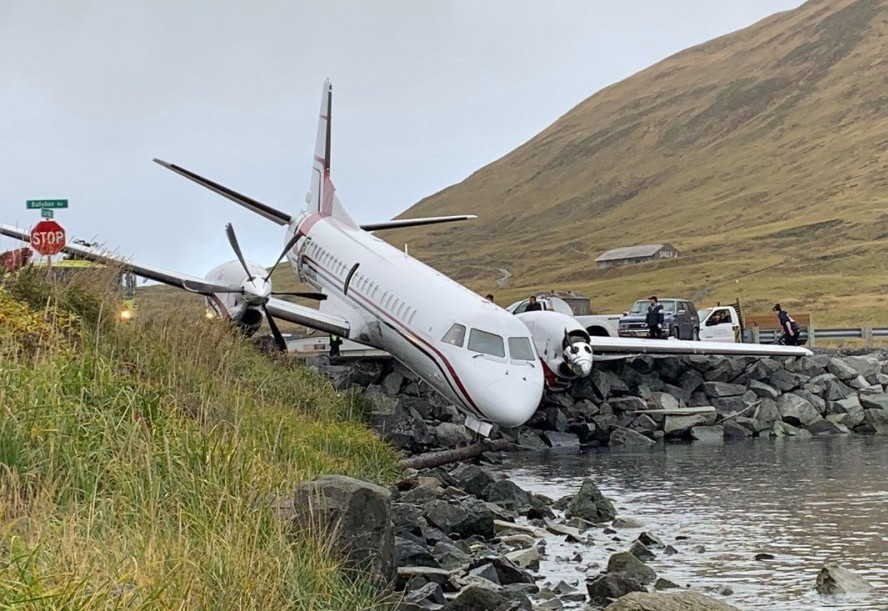

On March 27, 1977, the world witnessed one of the deadliest aviation disasters in history—the Tenerife Airport disaster. This catastrophic event claimed the lives of 583 people and remains a somber reminder of the importance of clear communication and safety protocols in aviation.
The Incident:
disaster occurred at Los Rodeos Airport (now Tenerife North Airport) on the Spanish Canary Island of Tenerife. It involved two Boeing 747 jumbo jets, operated by KLM and Pan American World Airways (Pan Am). The KLM flight, known as KLM Flight 4805, was preparing for takeoff, while the Pan Am flight, Pan Am Flight 1736, was taxiing on the same runway due to poor weather conditions.
Dense fog obscured visibility at the airport, making it challenging for both crews to see and communicate effectively. The KLM aircraft, misinterpreting the clearance instructions, initiated its takeoff while the Pan Am aircraft was still on the runway. Despite frantic efforts by both crews to avoid the collision, the two giants collided in a catastrophic explosion.
The Consequences:
The collision resulted in a massive fireball that consumed both aircraft. Of the 644 people on board, 583 perished in the flames. The tragedy was a significant blow to the aviation industry and led to widespread changes in safety protocols and procedures.
Lessons Learned:
The Tenerife disaster was a pivotal moment in aviation safety. It highlighted several critical issues that needed addressing: